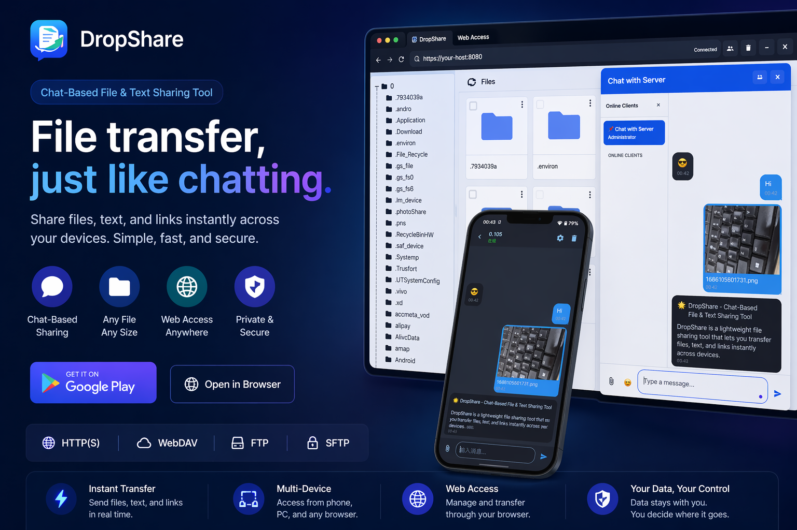

📱
Sender side
- Installs and opens DropShare
- Starts chat or sharing mode
- Creates the reachable local link
- Keeps the sharing session available
This page explains the browser side of DropShare. The app runs on the sender device, creates a reachable sharing session, and gives the receiver a local link that can be opened on another device such as a phone, tablet, or computer.
The biggest confusion usually comes from thinking the browser replaces the app. It does not. DropShare browser access is a sender-and-receiver workflow with two different roles.
A practical example is phone-to-PC sharing. The phone runs DropShare and the PC opens the shared address in a browser. This is one of the clearest ways to understand the product flow.

You can replace this image with your real combined phone + web screenshot for stronger credibility.
This version is intentionally practical and closer to how users actually complete the task.
Use the phone or device that will provide the file, text, or chat content.
Prepare the content you want to expose, then let the app generate the reachable sharing endpoint.
DropShare may provide an address such as http://192.168.1.100:8080 depending on the current network and transfer mode.
Use a browser on a PC, tablet, or another phone to access the shared content.
The receiver can then interact with the shared files, text, or other available content through the browser page.
These points reduce confusion and help the page answer search intent better.
These answers are written to serve both users and search engines looking for browser-based local file sharing guidance.
Not always. In many local browser-access scenarios, only the sender device needs the app. The receiving device can open the generated link in a browser.
Yes. This is one of the most natural use cases because a phone can run the sharing session and a PC can open the provided address for easy receiving.
Depending on the sharing mode, users may open files, text, chat content, and other lightweight shared resources provided by DropShare.
Usually this is related to network reachability, local IP changes, hotspot or Wi-Fi environment changes, or the sender device no longer keeping the session active.